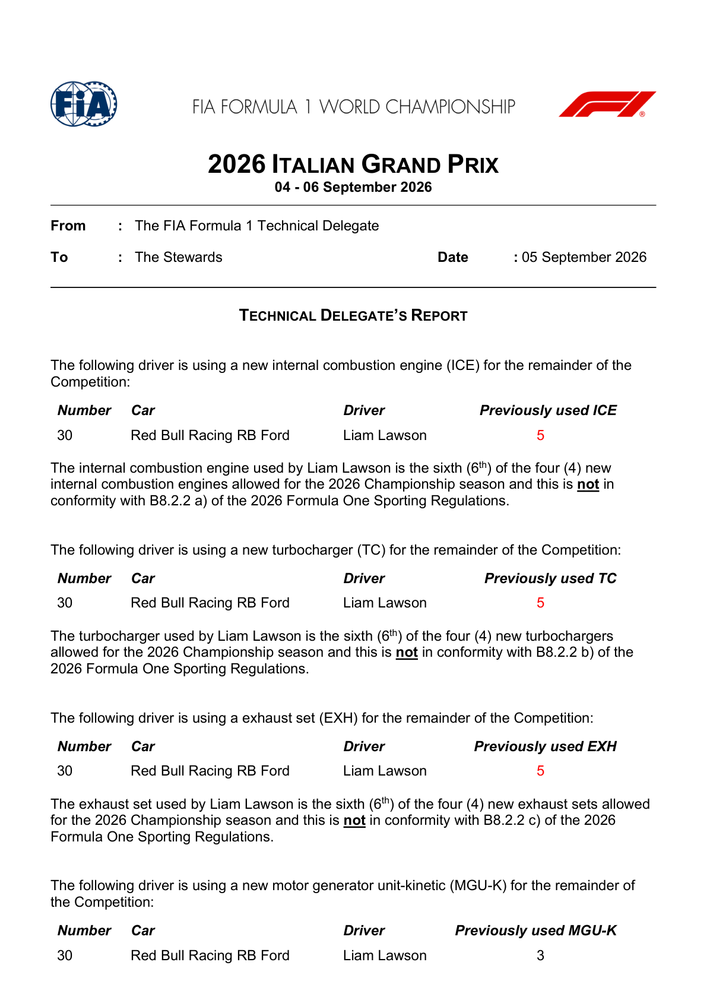
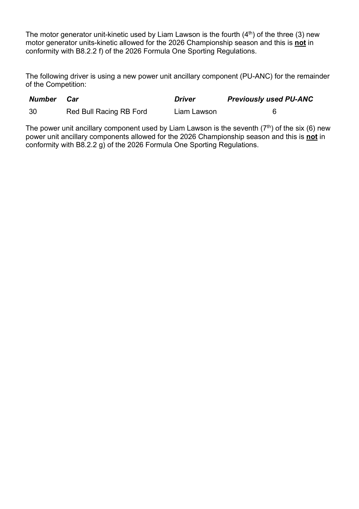
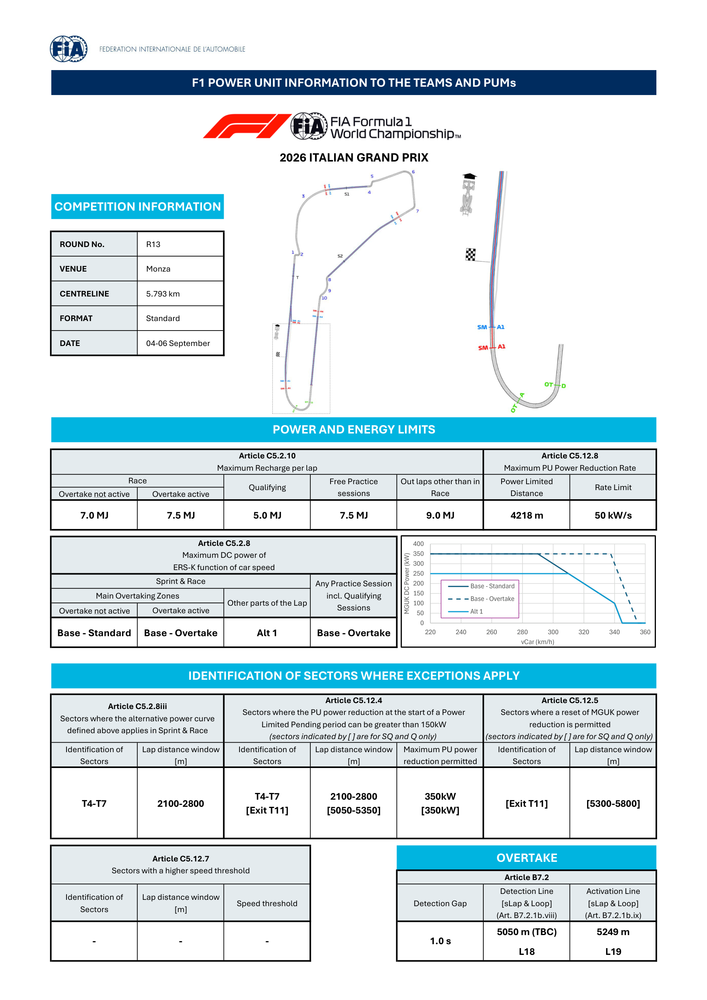
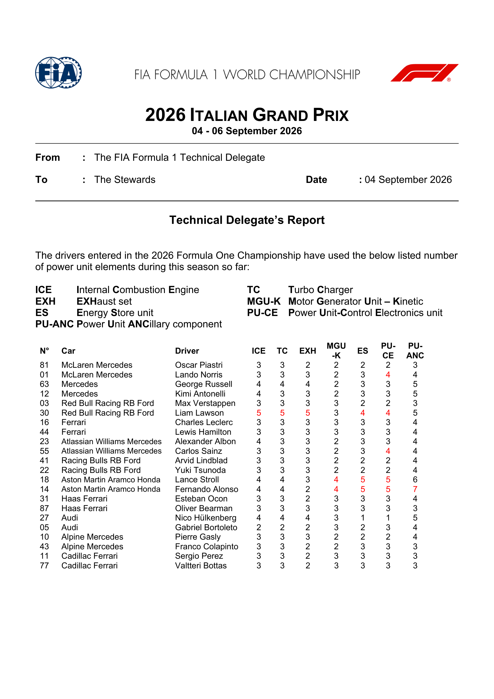
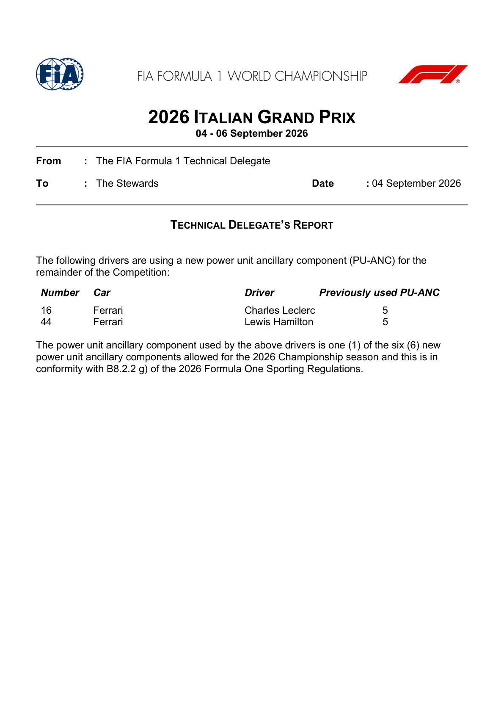
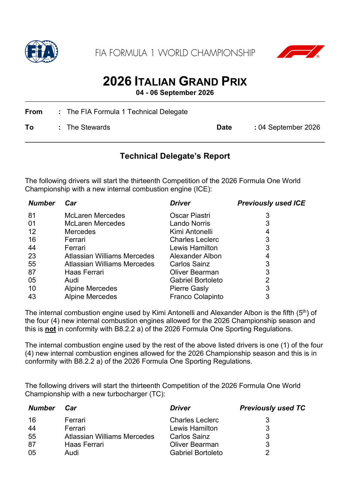
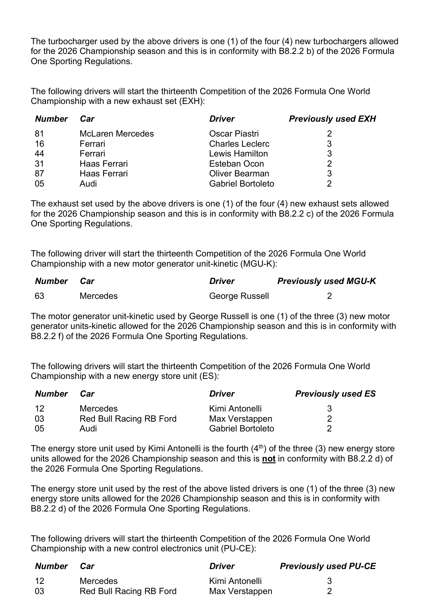
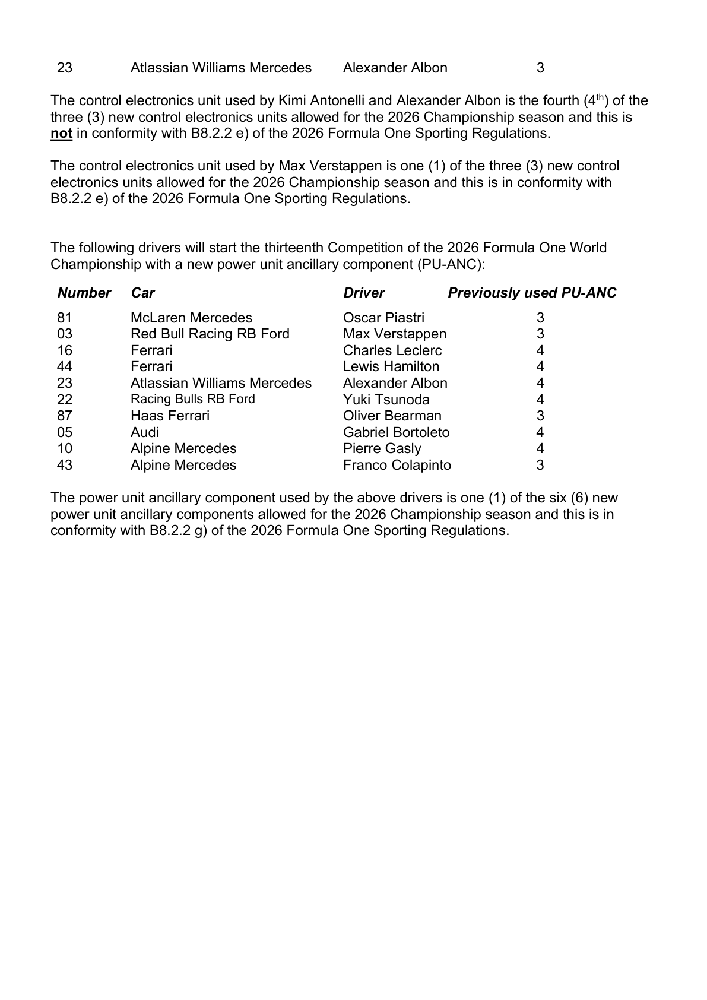

Power Unit & Override
The FIA's event-specific power-and-energy map is confirmed for Monza.
FIA official power-unit documents
Official source; curated transcription may await review. Linked PDFs are the authority. Discovery does not extract or verify numeric values, and does not replace the curated material below.
Last successful FIA document discovery: 2026-09-12T19:55:46.442854+00:00. This is retrieval time, not issue time; newer revisions may exist.
- 2026_italian_grand_prix_-_new_pu_elements_for_this_competition_1.pdf (official PDF)
- 2026_italian_grand_prix_-_new_pu_elements_for_this_competition_0.pdf (official PDF)
- 2026_italian_grand_prix_-_new_pu_elements_for_this_competition.pdf (official PDF)
- 2026_italian_grand_prix_-_pu_elements_used_per_driver_up_to_now.pdf (official PDF)
- 2026_italian_grand_prix_-_power_unit_information.pdf (official PDF)
Confirmed weekend themes
- The 2026 power unit shifts much more performance to electrical energy and removes the MGU-H.
- Active aero uses low-drag straight-line mode rather than the old DRS flap.
- Heavy braking gives harvesting opportunities, but the long full-throttle sections make deployment costly.
- Watch for lift-and-coast, early clipping and changing relative speed late on each straight.
New PU elements confirmed for Monza (Documents 13 & 18)
- Eleven cars started this race weekend on a new internal combustion engine: Piastri, Norris, Antonelli, Leclerc, Hamilton, Albon, Sainz, Bearman, Bortoleto, Gasly and Colapinto.
- Antonelli (5th ICE of 4 allowed) and Albon (5th ICE of 4 allowed) are the two whose new engines exceed the season allocation, triggering their grid-drop penalties above.
- Document 18 lists five previously used PU-ANC for both Leclerc and Hamilton: the newly fitted component was each driver's sixth, within the six-component allowance, not their first.
New-elements report: Lawson (Document 33, 5 Sep)
The Technical Delegate's New PU elements for this Competition report, issued 5 September 2026 at 12:40, records five new elements for Liam Lawson, car 30, each beyond its season allowance.
| Element | Previously used | New element number | Season allowance |
|---|---|---|---|
| Internal combustion engine (ICE) | 5 | 6 | 4 |
| Turbocharger (TC) | 5 | 6 | 4 |
| Exhaust set (EXH) | 5 | 6 | 4 |
| Motor generator unit-kinetic (MGU-K) | 3 | 4 | 3 |
| Power-unit ancillary component (PU-ANC) | 6 | 7 | 6 |
This report identifies the component infringements; it is not itself the penalty decision. The later 35-place grid penalty and subsequent pit-lane-start ruling are distinguished in the penalty watch below. These are Lawson's reported changes, not an updated whole-grid usage table.


FIA event power-and-energy map (Document 8, 3 Sep)

Maximum recharge per lap (Article C5.2.10)
- Race: 7.0 MJ with overtake not active, 7.5 MJ with overtake active.
- Qualifying (any segment): 5.0 MJ — the lowest cap of any session.
- Free practice sessions: 7.5 MJ.
- Out-laps other than in the race: 9.0 MJ.
Maximum PU power reduction rate (Article C5.12.8)
- Power-limited distance: 4218 m.
- Rate limit: 50 kW/s, separate from the recharge-per-lap figures above.
- Article C5.12.4 permits a 350 kW reduction at the start of a Power Limited Pending period in T4–T7 (2100–2800 m).
- Qualifying-only additional reduction window: exit T11, 5050–5350 m, also 350 kW. The separate MGU-K power-reduction reset window (C5.12.5) is 5300–5800 m, qualifying only.
- The bracketed exceptions are labelled SQ/Q in the FIA template; Monza had a standard weekend with no Sprint Qualifying.
Maximum DC power of ERS-K vs. car speed (Article C5.2.8)
- Sprint & Race, main overtaking zone: Base – Standard curve (overtake not active) or Base – Overtake (overtake active).
- The alternative Alt 1 curve's identified race sector is T4–T7, 2100–2800 m (Article C5.2.8iii). Do not treat it as a blanket restriction on every other straight.
- Any practice session, including all qualifying segments: Base – Overtake applies for the entire lap — there is no Alt 1 restriction in qualifying.
Main overtaking zone
- Detection line: 5050 m (TBC), timing loop L18; activation line: 5249 m, loop L19. These are timing-loop identifiers, not corner numbers.
- Detection gap: 1.0 s.
- The circuit map locates detection at the entry to T11 and activation at T11. The PU document still marks the detection distance TBC; no unqualified replacement distance is asserted here.
- Base – Standard and Base – Overtake share the 350 kW plateau at lower speeds; Overtake retains the higher ceiling later in the speed range. See the original graph rather than treating the difference as constant.
- No higher-speed-threshold sector is specified under Article C5.12.7 (the table contains dashes).
Sources: FIA 2026 Italian Grand Prix — Power Unit Information (Document 8, issued 3 Sep 2026, 20:50); Technical Delegate's Report, New PU Elements (Document 13) and New PU-ANC Report (Document 18); all via the FIA Italian Grand Prix documents hub. The PDFs and their tables were visually checked on 10 September 2026.
PU element usage and penalty watch

Official FIA document screenshots
Automatically rendered from the official PDFs. These figures do not update or verify the curated numeric transcriptions above. Unchanged pages already illustrated above are not repeated here.
2026_italian_grand_prix_-_new_pu_elements_for_this_competition_0.pdf
PDF retrieved 2026-09-12T19:56:00+00:00; this is not its issue date.

2026_italian_grand_prix_-_new_pu_elements_for_this_competition.pdf
PDF retrieved 2026-09-12T19:56:00+00:00; this is not its issue date.


